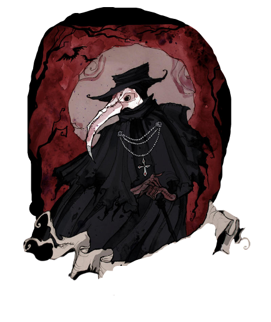
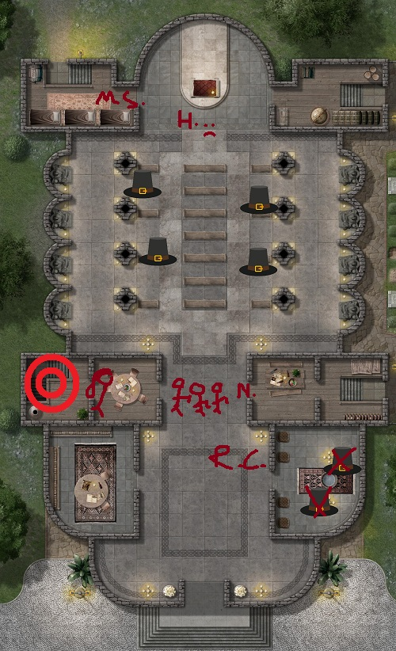

Seth'in büyüsü işe yaramış gibiydi kısmen. Cadı avcıları arbaletlerini dolduramayınca bu sefer kısa bıçaklarını çekmiş ve onları fırlatmaya başlamışlardı. Seth'in çıkardığı rüzgar bıçakları durduramamıştı.
Neyse ki yardımına yetişen Meredith olmuştu. Ölü seherbaz Alfred'in cesedinden de destek alarak koruma büyüsü yapmaya kalkışmış, adamın vücuduna saplanan kısa bıçakların seslerini duymuştu birer birer. Cadı Avcılarının haykırışları kulağına çalınıyordu.
"Bu Von Motke'yi öldüren cadı değil mi? Dikkatli olun kardeşlerim!"Ancak büyünün yeterli olmaması sebebiyle Hoffman'ı koruyamamıştı. Hoffman'ın bacaklarına saplanan bıçaklar yürümesine engel olmuş ve yere kapaklanmasına neden olmuştu. Ölmemişti ama öfkeyle karışık bir haykırış koyuvermişti. Meredith ve Seth soldaki odaya vardılar. Odada yataklar ve ranzalar mevcuttu. Bir tanesinin üzerinde katlanmış bir mektubu andıran kağıt bulunmaktaydı.
Cornelia'nın asası o kadar etkili çalışmıştı ki, vücudundaki yaralar birer birer kapanıvermişti. Hatta üstüne üstlük üzerine cadı avcıları tarafından fırlatılan kısa okları birer birer savuşturmuştu asasıyla.
Raiden ise yanına kadar gelip
Conjunctivitis savurarak, cadı avcılarını kör etmişti. Öyle ki sağa sola koşuşturan sivri şapkalı ve maskeli siluetler birbirlerine çarpıp engellere takılarak yere devrilmişlerdi.
Nicholas ise tören salonuna doğru koşarken sağa sola immobulus atmakla meşguldü. Odalardaki potansiyel cadı avcılarına yolladığı büyülerden birkaç tanesi birilerine isabet edince duraksadı. Hemen solundaki odadan bir vaaz işitir gibi olmuştu.
"Evet çocuklar, unutmayın! Bugün kutsal bir savaş uğruna şehit olma-"Bir kadın, kısa küt ve siyah saçları vardı. Gri gözlü ve üzerinde rahibe kıyafeti olan bir kadındı. Yaklaşık 4-5 adet çocuğun başına dikilmiş ve onlara vaaz vermekteydi. Çocukların ellerinde sivri, ince bıçaklar, gözlerinde yanan fanatik bir ateş ile kıpkırmızı yanakları ve ruhsuz bakışlar.
Nicholas farkında olmadan birkaç tanesini kıpırdamaz hale getirmişti. Ancak kalan 3 tanesi elinde bıçaklarla üstüne atılmıştı. Biraz geriye sıçrayıp çocukların bıçaklarından kaçınsa da, çocuklar üzerine gelmekte ısrarcıydı. Arkada ise rahibenin çığlıkları...
"İşte melun cadı! Öldürün onu, Rab sizi kutsasın çocuklar. Öldürün!"
O sırada başka bir yerlerde...
Mahzenin öbür ucundaki gölgelerden bir siluet belirdi. Bay Twinkle’ın dünyası karanlığa boğulmadan evvel gördüğü son yüz idi bu. Bir kuşun gagasını andıran soluk maskesi ve çene kaslarının gerilmesine sebebiyet veren rahatsız edici sessizliğiyle belirmişti yine. Pierre dediklerini hatırlıyordu bu adama. Sesini ise hiç duymamıştı. Konuştuğunu da...
[spoiler]

Pierre - Soluk Doktor
[/spoiler]
Lenore’in yatıştırıcı sözlerini duyamıyordu artık. Hipnoz olmuş gibi dikmişti bakışlarını maskedeki gözlerin olması gerektiği yerde asılı iki dipsiz kuyuya. Soluk maskeli adam sessizce ve hiç konuşmadan yaklaştı Bay Twinkle’ın yanına. Elinde cam bir şişe vardı. İçinde ise siyah bir karışım. Başseherbazın kollarından akmakta olan kanı şişeye doldurmaya başladığında çukur halindeki gözlerini de cücenin gözlerine dikmişti. Merlin’in kanı... diye düşündü Bay Twinkle. Babası kudretli bir büyücü Galehodin Wyltt, bir cüceyle olan aşkını ve bu aşkın meyvesi olan oğlunu asla kabul edememişti. Bunda da en büyük etken, soylarının Kral Arthur dönemine kadar dayandığını iddia eden büyükbabasının o katır inadı olmuştu. Annesinin soy adını almıştı tam da bu yüzden. Egnast Twinkle... Belki de kendisi gibi ucubelere olan nefreti bu yüzdendi. Annesinin soyuna olan ve atalarından miras kalan nefreti.
Doktor şişenin yarısını doldurmuştu ki, tıpasını takarak şişenin uzaklaştı yanından başseherbazın. Lenore’un soğuk dokunuşunu hissetti yaralarının tam üzerinde Bay Twinkle. Yine o ürpertici soğuk... Acı giderek azaldı ve hemen ardından da yok oldu. Başını öne eğdiğinde yaraların giderildiğini gördü. Kapanmıştı her birisi. Durmuştu kanaması.
“Sen, büyü yapıyorsun?...”“Şşşt...” Gülümsedi Beyaz Gelin. Ellerini önünde kavuşturdu.
“Bu büyü değil, bir mucize sevgilim. Aşkımızın mucizesi...”“Ne!?”Jean’ın cırtlak sesi böldü konuşmalarını.
“Evet, gelin hanım! Bu mucizelerinizi biraz da bizim işimize yarar şekilde kullanmak istemez misiniz?” Alaycı tonlamayla ettiği laflar, Lenore’un yüzünün düşmesine sebep olmuştu.
“Gecikiyoruz. Elini çabuk tutmalısın Lenore, her şey hazır.”Beyaz Gelin yükseldi zarif ayak bileklerinden güç alarak. Mermer sunağı andıran yapının başına geldi. Soluk maskesiyle Doktor da yanında yerini almış, içinde Bay Twinkle’ın kanının bulunduğu karışım olan şişeyi sessizce uzatmıştı.
“Bunu yapmak zorunda mıyım?” dedi gümüş rengi saçlarını savurarak arkasına son bir bakış fırlattığı esnada.
“Oyunbozanlığın sırası değil! Merlin’in mührünü kıran sen olacaktın.”“Sonuçta liderimiz sensin değil mi?”Jean ve Edgar’ın kıkırdımaları duyuldu.
Lenore çaresizce şişeye uzandı. Tıpayı çıkardı. Başseherbazın kanından birkaç yudum almak üzere dudaklarına götürdü şişeyi. Beyaz, ince dudaklara kan yürüdü. Sonra da o mermer sunaktaki yanıklarla çizilmiş sembole döktü aynı kandan.
“Et vidi quod aperuisset agnus unum de septem signaculis, et audivi unum de quattuor animalibus dicentem tamquam vocem tonitrui veni...”Bir gök gürültüsü duyuldu gökyüzünde. İnledi yeryüzü. Kulakları sağır eden korkunç bir gürültüydü. Kilisenin camlarını titreten ve neredeyse zemini alıp götüren ayakların altındaki. Yanık mühür koparcasına söküldü mermer sunağın üzerinden. Kara bir dumana dönüşüp Lenore’a ulaştı. Ona bir nefes gibi yaklaştı ve içini doldurmaya başladı. Gümüş saçlarını savurdu Lenore ve alnı, ışıktan bir taç giymişçesine parıldadı. Mahzendekilerin gözleri kamaştı kısa bir anlığına. Lenore’un güçsüz çığlığı duyuldu peşinden de. Kilisenin duvarlarında yankılanmıştı adeta, yerlerini belli edercesine.
Sonra her şey eski haline döndü. Beyaz Gelin hariç. Dizlerinin üzerine çökmüştü ve ellerini yere dayamıştı. Zemini avuçlarcasına sıkıyordu.
“Sanırsam başardık!” diye kıkırdadı Kızıl Düşes.
“Nasıl hissediyorsun, güzellik. Bir düzine soylu erkeğin verebileceğinden daha çok zevk aldığına eminim!”“Sen, ahlaksız bir kadınsın Jean!” Edgar yadırgar şekilde başını iki yana salladı ve Lenore’un yanıbaşına kadar adımladı odayı.
“Kalkabilecek kadar iyiysen artık yola düşmeliyiz. Sayımızın azalıp payımızın artmasını ne kadar istesem de, yukarıdaki sihirbazların bize birkaç metelikten fazlasını kazandıracağını sanmıyorum. Gerçi ölüm, senin için artık bir problem olmamalı değil mi?”“Hah! Ölüm demişken...” Jean, sinsi bakışlarını Bay Twinkle’a çevirmişti.
“Pierre... Senin sihirli yaratıklara ilgini düşünürsek, ayrılmadan önce bu cüceden birkaç hatıra almak isteyebilirsin. Sonuçta sevgili seherbazımız da, tıp biliminin ilerlemesine katkıda bulunmaktan çekinmez değil mi?”“Onu serbest bırakacağınıza söz... vermiştiniz...” diyebildi Beyaz Gelin güçsüzce.
“Tabi ki serbest bırakacağız. Ama Doktor’un çalışmalarına da mani olmak istemeyiz değil mi Lenore?”Soluk maskeli Doktorun kendisini süzerek yanına yaklaştığını dehşet içerisinde fark etmişti Bay Twinkle. Bu garabet dolu salonda her ne yaptılarsa, hiç hayra alamet olmadığı aşikardı. Kollarını saran bağlardan kurtulmaya çalıştı nafile bir çabayla. Bir şekilde bu sandalyeden kurtulmalıydı ama nasıl? Kendi kanının kokusunu hala almaktaydı. Elinde ucu son derece sivri ve ufak bir bıçakla üzerine doğru gelmekte olan Doktor’a çevirmişti bakışlarını.
“Buradan kurtulduğumda üzerinize bir kabus gibi çökeceğime emin olabilirsin karga suratlı, gözsüz ucube seni! Hepinizi haklayacağım duyuyor musunuz!? Gecelerinize kabus gibi çöküp, sevdiklerinize kadar tüm o muggle soyunuzun peşine düşeceğim! Geceleri kabuslarınızda beni göreceksiniz! Gündüzleri korkunuzdan sokağa adım atamayacaksınız! Duyuyor musunuz beni, ha!? Duyuyor musunuz, AAGH! AAAĞHH!”Neşter kana bulandı. Bay Twinkle’ın dünyası bir kez daha karardı.
[spoiler]

Çöp adamlar çocuklar.
Yuvarlakların olduğu yer ise Lenore'nin çığlığının duyulduğu yer
[/spoiler]
Not:
1- Gök gürültüsünü ve zeminin titremesini herkes, cadı avcıları da dahil olmak üzere hissetmiştir. Hatta bu çatışmanın bir an duraksamasına ve cadı avcılarının afallamasına sebebiyet vermiştir.
2- Lenore'un çığlığının geldiği yer haritada belirtilmiştir.
3- Yarın saat 21:00'a kadar RP'lerinizi bırakabilirsiniz. 21:00'dan sonra RP serimizin finaline geçeceğiz.
4- Herkese şimdilik geçmiş olsun!